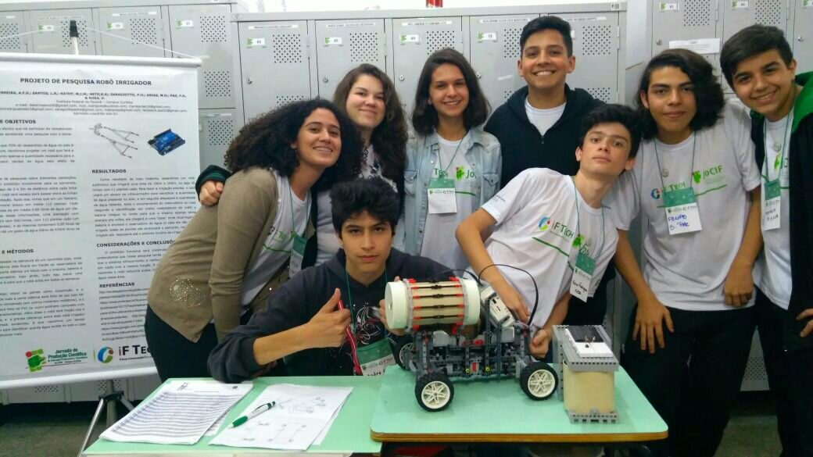
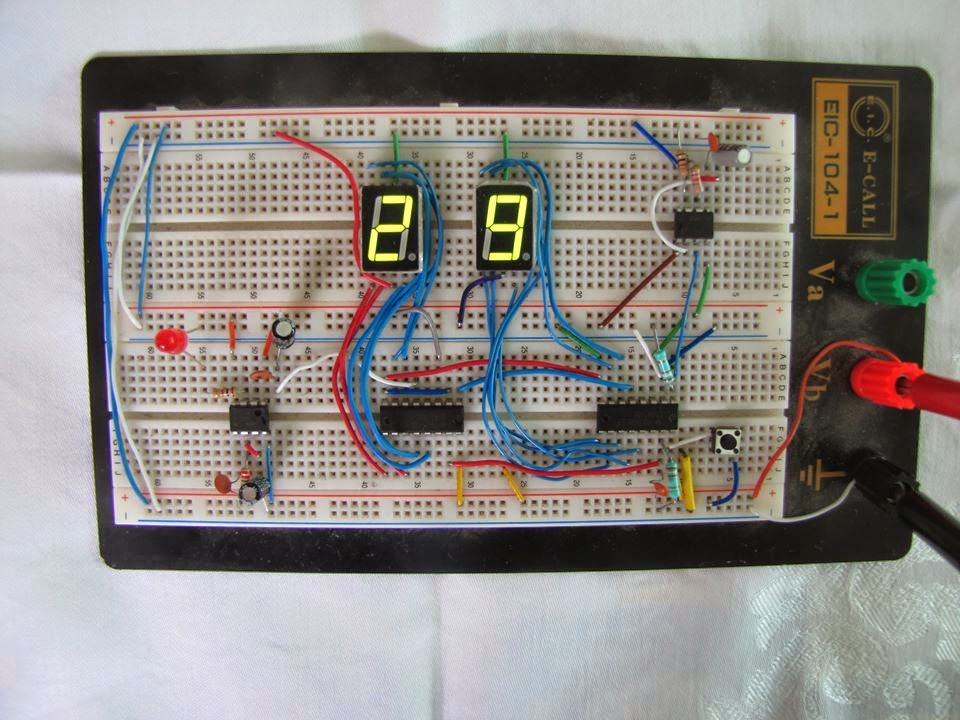
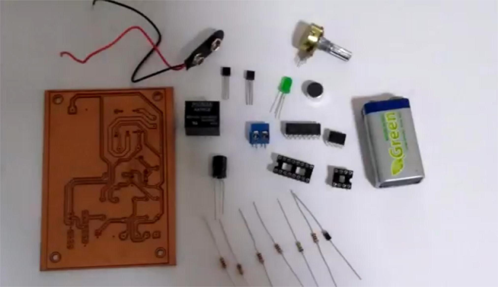
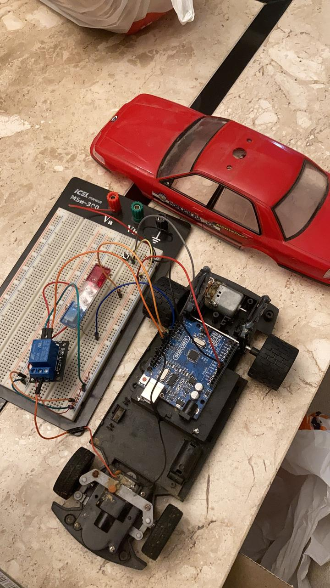

Bem-vindo ao meu portfólio
Olá, sou Matheus Barbosa da Silva, um apaixonado por tecnologia, programação e eletrônica. Desde a infância, sempre tive um grande interesse em entender como as coisas funcionam, o que me levou a explorar e criar projetos em várias áreas da tecnologia.
Minha trajetória começou com o desejo de entender os componentes eletrônicos e evoluiu para a programação e a automação. Ao longo dos anos, venho desenvolvendo projetos que unem a eletrônica e os algoritmos, sempre aprendendo com cada um deles.
Este site é onde compartilho alguns dos meus trabalhos: programas em C, aplicações web, circuitos eletrônicos e automações. Mais sobre mim na página Sobre mim.
Projetos de Programação
Programas escritos em C, cada um com uma simulação em JavaScript para testar direto no navegador.
| Projeto | O que faz |
|---|---|
| Cálculo de Combustível | Compara etanol e gasolina pelo custo por km e pela autonomia do tanque. |
| Calculadora de Matrizes | Monta matrizes de 1x1 até 4x4 e soma todos os elementos. |
| Jogo da Forca | Adivinhação de palavras com dicas, em português e inglês. |
| Simulador de Banco | Consulta de saldo, depósito e retirada em uma conta simples. |
| Roleta | Sorteia uma entre as opções digitadas. |
| Fórmula de Bhaskara | Resolve equações do segundo grau mostrando o delta e as raízes. |
Projetos de Eletrônica
Circuitos, sensores e automação, do curso técnico no IFPR até a faculdade.
-

Robô de Irrigação Pontual (2017, IFPR)Veículo autônomo que mede a umidade do solo e irriga só onde precisa.
-

Esteira com Display Contador (2018, IFPR)Esteira que conta de 00 a 99 os objetos que passam pelo sensor infravermelho.
-

Interruptor por Palmas (Universidade Positivo)Liga e desliga uma lâmpada com o som de palmas, usando CI 555 e CI 4017.
-

Carrinho de Polícia com Cockpit (Arduino)Carrinho de controle remoto refeito com Arduino, giroflex e cockpit com volante e pedais.